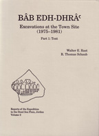

Walter E. Rast and R. Thomas Schaub
The 1975-1981 Excavations at the Town Site of Bab edh-Dhra
University Press: Fribourg Switzerland, 2003
 |
For a site that has been well known for its tombs, this volume on Early Bronze Age settlement at Bâb edh-Dhrâ‘ brings a new perspective by turning attention from the cemetery to the living community and its activities, insofar as these can be reconstructed from the archaeological finds. The burial evidence and accompanying artifacts are naturally always important in themselves as well as for comparison, and reference to them will be found at many places in this volume. But the focus here is on a large body of data relating to the people who settled this Early Bronze site from the latter quarter of the fourth to the end of the third millennium B.C. Lapp's excavations in 1965 were the first to show that Bâb edh-Dhrâ‘ was an Early Bronze Age settlement rather than a specialized ceremonial site, as many had speculated prior to his work (P. Lapp 1966: 560-61; for references to the prevalent interpretation of the site as a distinctive one accompanied by cultic activities see Schaub and Rast 1989: 17-18). Following upon Lapp's discoveries, the several seasons of the Expedition to the Dead Sea Plain (EDSP) have uncovered a great deal more evidence for the history of Early Bronze settlement here. Therefore, it now has to be recognized that if a special significance is to be ascribed to Bâb edh-Dhrâ‘ it is not because it was an unusual site in antiquity but rather because it provides a unique case of Early Bronze Age urbanism in an exceptional part of the country, the isolated environment along the southeastern Dead Sea Plain. Bâb edh-Dhrâ‘ takes its place within the discussion of the social and political events occurring on both sides of the Jordan Rift during the late fourth and third millennia B.C. Its remains open a window to the lifeways of the people who constructed its numerous tombs throughout the entire Early Bronze Age. This volume is the second in the series Reports of the Expedition to the Dead Sea Plain, Jordan. The first contained the final publication of all tombs excavated in the cemetery under Lapp's direction between 1965 and 1967 (Schaub and Rast 1989). Two further reports of the EDSP are to follow: one dealing with the excavations of the EB III site of Numeira, an EB I cemetery at Feifa, and an EB I cemetery at Khanazir; and another devoted to the tombs excavated by the EDSP, with special attention to the human remains. Both volumes are in progress. The present volume deals with the data retrieved at the town site by the EDSP during seasons in 1975, 1977, 1979 and 1981. The fields excavated under Lapp's direction in 1965 are also incorporated. The inclusion of the latter was facilitated by the fact that the EDSP has been using the same numbering and locus system as the earlier excavations. Lapp's fields were numbered Fields I-VII while those of the EDSP were designated Fields VIII-XIX. |
| Back to Publications | Table of Contents |